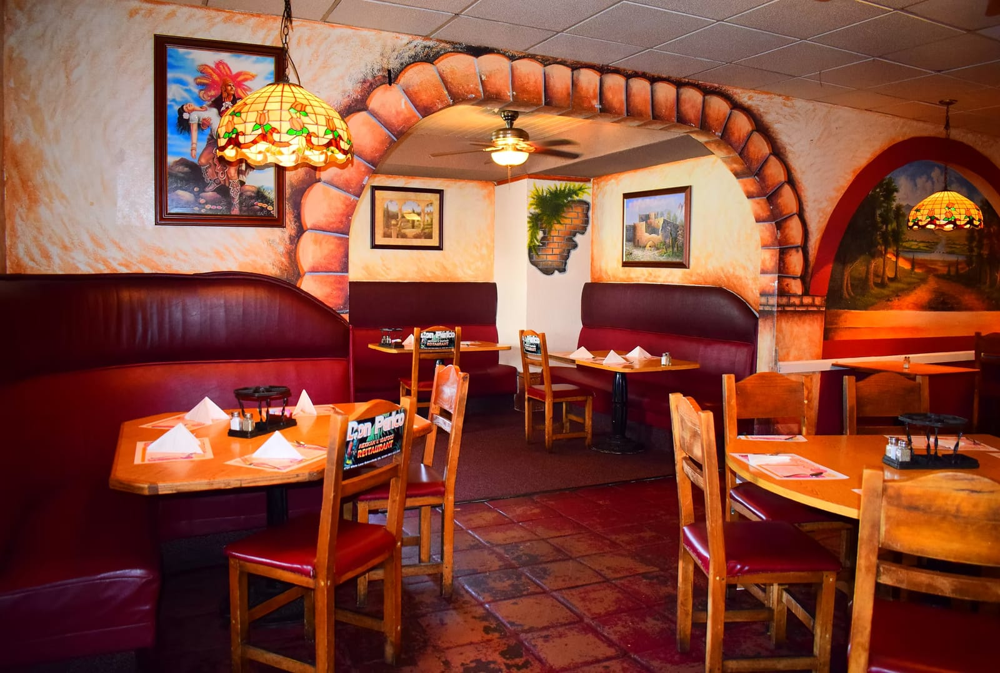
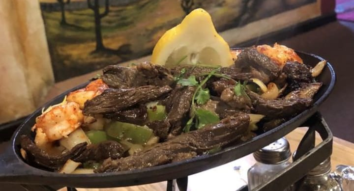
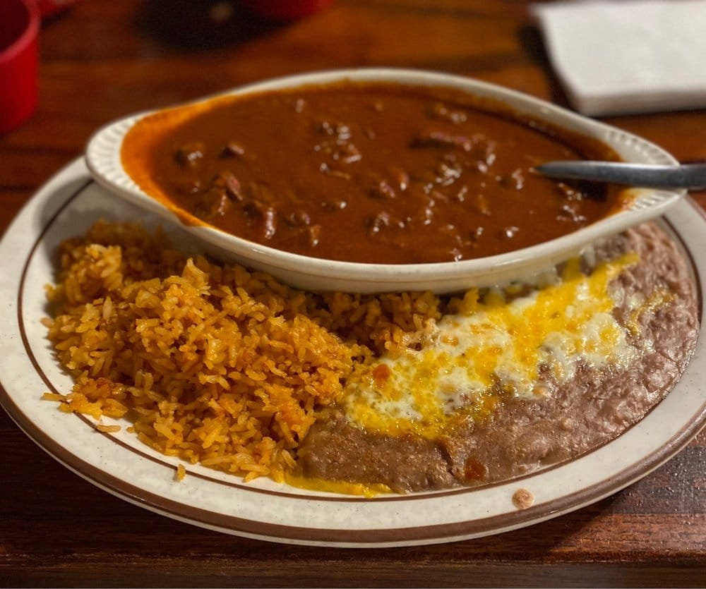
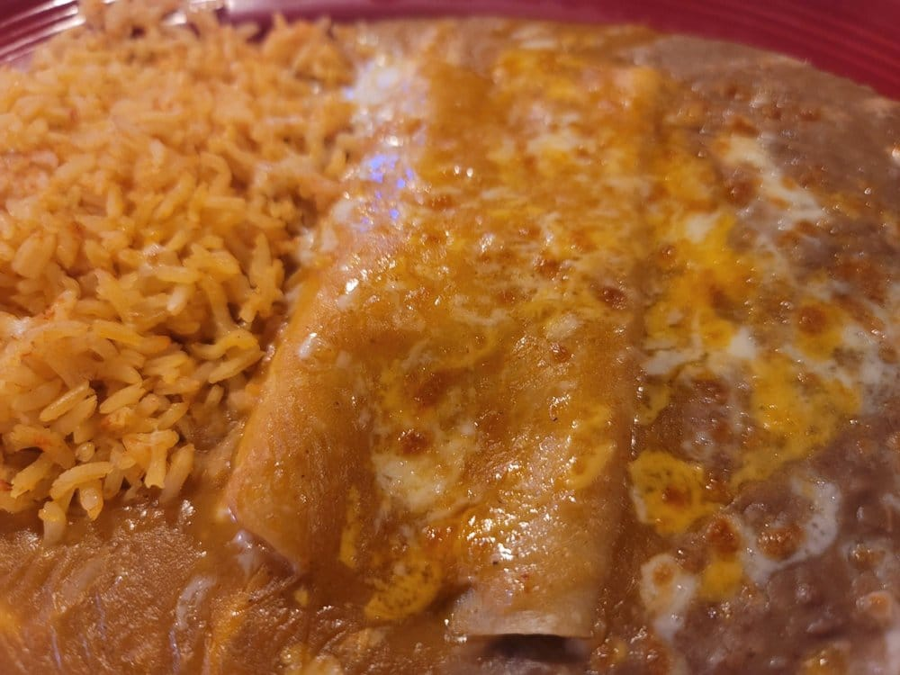
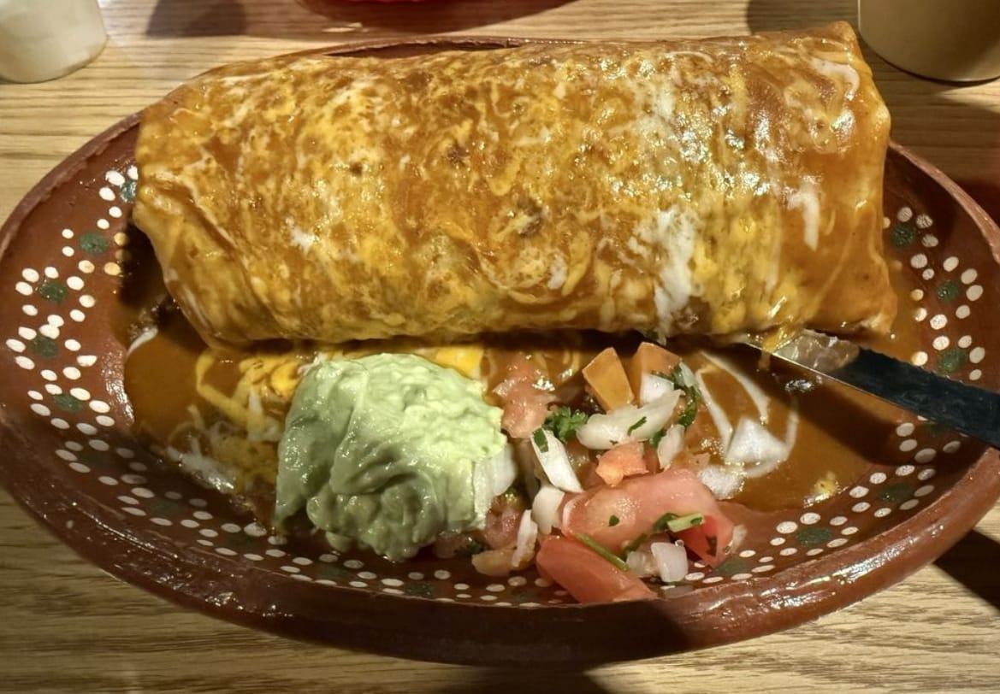
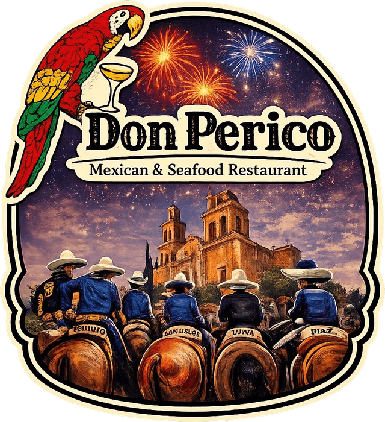
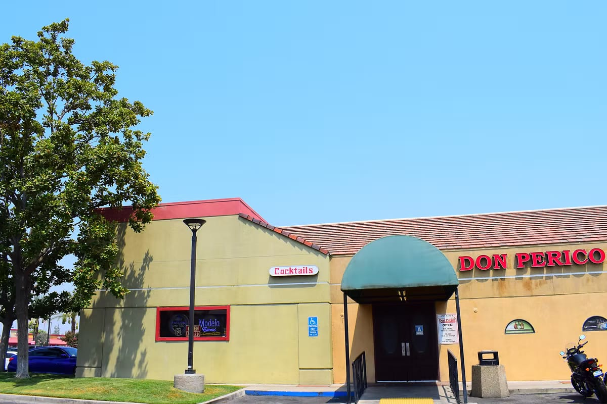

Family-owned since 1998
Proudly serving Bakersfield
Scratch-made Mexican food, sizzling fajitas, fresh seafood and margaritas on White Lane.
Guest favorites
What everyone orders
-

Fajitas from 17.50
Marinated, char-grilled steak or chicken with peppers and onions, served sizzling.
-

Chile Colorado 18.95
Chunks of steak simmered in a rich, smoky red-chile sauce.
-

Cheese Enchiladas 15.95
Corn tortillas with melted cheese and red-chile sauce, baked until bubbly.
-

Burrito Ranchero 16.95
Shredded beef or chicken, smothered in ranchera sauce and melted cheese.
Every Sunday
Sunday Brunch Buffet
Our most popular tradition. Bring the whole family, fill your plate and go back for more. One set price covers the entire buffet.
Rather order off the menu? Our full menu is available on Sundays too.
Brunch buffet
All Day
every Sunday
One set price
Full menu available too
Our story
A Bakersfield tradition since 1998
Don Perico Mexican & Seafood Restaurant has been family-owned and operated on White Lane since 1998.
We still make everything from scratch and to order, from sizzling fajitas to fresh seafood, and we still bring the warmth of Mexican home cooking to your table.

Visit us
Come hungry

- Address
- 4701 White Lane
Bakersfield, CA 93313 - Hours
- Mon–Sat: 11am – 10pm
Sunday: Brunch buffet all day, full menu available - Phone
- (661) 555-0100